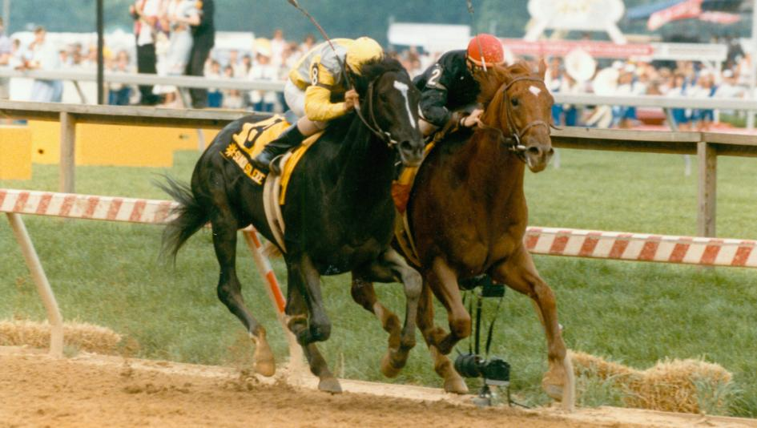

Want to find horses based on simple attributes like the color of their coat, their career status, or their gender? Well then this is the place for you! Whether you're new to horse racing or already know a thing or two, this site will help you find cute horsies to learn more about ^_^
(for the uninitiated)